01 / The question
Learning a distribution
from a single example
One photograph tells us what a particular scene looks like. It does not tell us which parts should stay fixed, which should vary, or what the same subject looks like from the other side.
That ambiguity is the starting point for my single-image GAN adaptation project. The target is a photograph of a red BMW E46. I want to adapt a pretrained car generator so that new random inputs produce varied images that inherit something useful from that reference: its appearance, its visual character, ideally its vehicle identity.
Simply reconstructing the photograph would solve a different problem. A generator that always produces the training image has excellent fidelity to that image and no useful diversity. A generator that ignores the image preserves variety but learns nothing from it. The interesting region lies between those extremes.
This post follows the project from its original mapping-based method through the recovery of old checkpoints and a series of modern adaptation experiments. The strongest result is a diagnostic one: the historical transformation is highly compressible, yet the tested low-rank training recipes did not recover its visual quality. That gap between what a model can represent and what training actually finds became the central research question.
The central observation
A small update can represent an adaptation.
Finding that update from one image is the harder problem.
02 / The original idea
Keep the renderer.
Change where you look.
A pretrained StyleGAN2 generator already contains substantial knowledge about cars, lighting, and scenes. Its mapping network transforms a random vector z into a style vector w; its synthesis network turns that style into an image. My original combined-mapping design keeps synthesis frozen and trains a mapping branch alongside a frozen copy of the pretrained mapping.
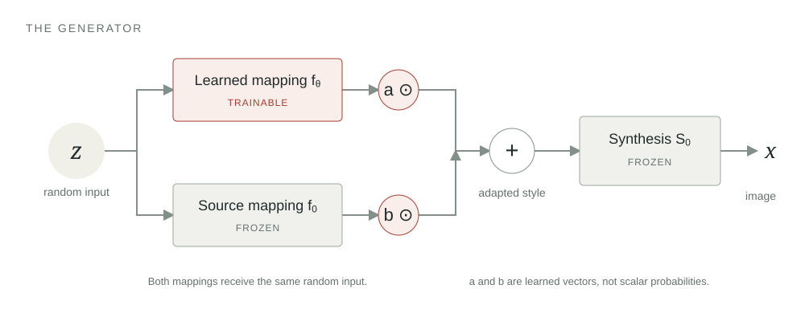
xadapt = S0(wadapt)
Here f0 is the frozen source mapping, fθ is the learned mapping, and S0 is frozen synthesis. The vectors a and b are learned elementwise coefficients—not a single mixing slider, and not constrained to sum to one. In the restored implementation, both start at 0.5, and the learned mapping starts from the source mapping, so the initial generator reproduces the pretrained model.
The intuition is to reuse the source generator’s visual vocabulary while changing how random inputs move through it. This imposes a useful constraint, but it does not guarantee realism: the mapping can still push styles into regions where the frozen synthesis network produces poor images.
The training signal also combines adaptation and preservation. The restored discriminator averages a partially trainable discriminator’s score on an augmented image with a frozen reference discriminator’s score on the unaugmented image. A weight penalty discourages the trainable discriminator from moving too far from the source. Freezing the reference parameters still permits gradients through its input, so it can guide the generator.
Implementation details that matter
The combined model uses one 512-dimensional style vector and two learned 512-dimensional blend vectors. The mapping has eight fully connected layers. The restored discriminator retains the notebook’s constant 4.0 minibatch-statistic channel. Its early convolution blocks remain frozen while later blocks and the final layers train. The notebook’s duplicated 0.001 discriminator weight penalty is represented as a single 0.002 penalty. These are details of this project’s restoration, not default StyleGAN2 settings.
03 / Designing the training views
One photograph.
Many ways to learn from it.
The augmentation pipeline was a central part of my original design. With one photograph, deciding what the discriminator gets to see is part of deciding what the generator should learn.
My notebook combines a geometry-aware crop pipeline with two views of each example: a transformed view for the adapting discriminator and a whole-image view for the frozen reference discriminator. I built this around the car model’s rectangular image content and square input canvas. The color and cutout operations come from Zhao et al.’s DiffAugment; the project-specific work is their composition with padded crops, the real/fake data paths, and the two-discriminator design.
Build a stream of training views
The original dataset does not store thousands of independent car photographs. It repeatedly samples transformations of the same 512 × 384 reference. These transformations expose different scales, locations, colors, and visible regions; they cannot reveal a genuinely unseen side of the car.
- Flip the real photograph.A horizontal flip is sampled with probability 0.5. Both real-data branches begin with that same orientation.
- Vary its appearance.Differentiable brightness, saturation, and contrast changes perturb the augmented branch. This makes the training view vary even when the underlying photograph does not.
- Pad, then crop and resize.Add 64 pixels on all four sides, giving a 640 × 512 canvas. Sample a crop covering 22.5–90% of that padded area, with width/height ratio 1.0–1.778, and resize it to 512 × 384. The extra canvas permits reframing and views containing more surrounding padding.
- Hide a random region.Cutout masks a rectangle with half the content height and half its width: 192 × 256 pixels before clipping at the image boundary. That is at most one quarter of the content canvas, not half its area.
- Restore the model’s canvas.Add the 64-pixel top and bottom borders to return to 512 × 512, then map values to the model’s training scale. Geometry is transformed within the rectangular content before those final borders are restored.
The notebook deliberately uses random resized cropping without adding DiffAugment’s separate translation operation. The crop already changes framing. Its scale and aspect-ratio bounds are calculated from the reference’s 4:3 geometry, rather than copied unchanged from a square-image recipe.
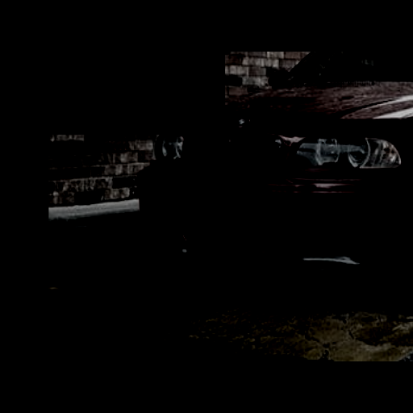
Draw 2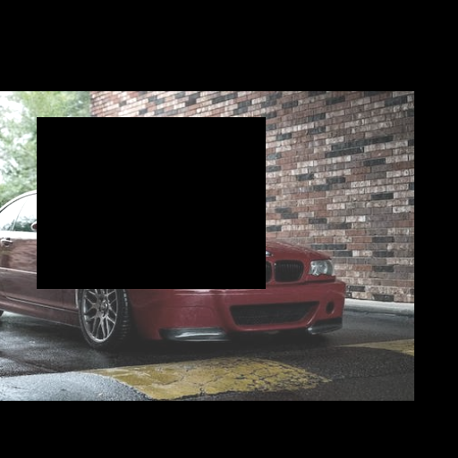
Draw 3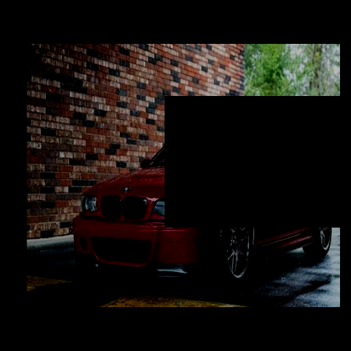
Draw 4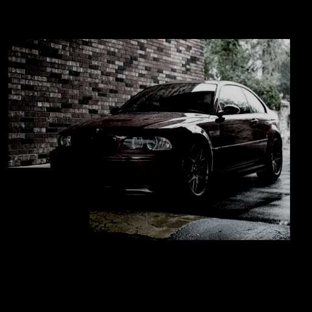
Draw 5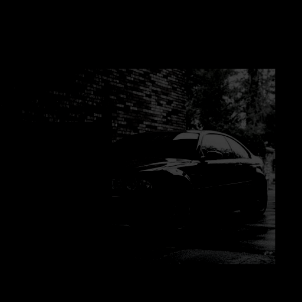
Draw 6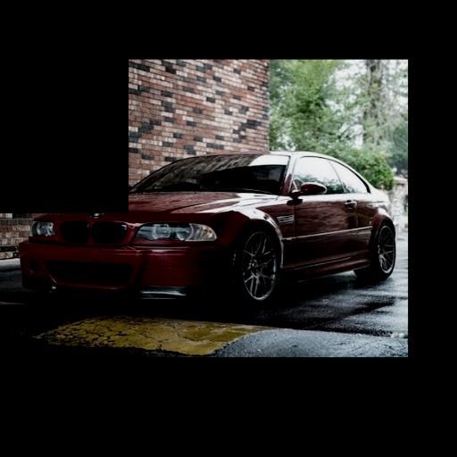
Keep a whole-image reference alongside the changing view
Adapting branch
Color → padded crop → cutout
½ × adapting discriminator scoreFrozen reference branch
Whole image, with its model borders
½ × frozen discriminator scoreI average these two scores before applying the adversarial loss. The design lets one branch adapt to varied observations of the target while the other continues to evaluate the whole image using its pretrained parameters. For real examples, “whole image” can still mean the horizontally flipped photograph; it skips the color, crop, and cutout operations.
Generated images follow the same color/crop/cutout recipe on the adapting branch. Their existing letterbox rows are removed first, so augmentation operates on their 512 × 384 content too. The frozen branch sees the full generated image. During the generator update, gradients pass through the transformations and through both discriminator branches. Freezing reference weights does not block the gradient back to the generated pixels. This is why the transforms are part of the learning signal, and why black cutouts in these previews are not images the generator is being asked to reproduce.
Exact parameters and restoration details
In the DiffAugment implementation used here, brightness adds a uniform offset in [−0.5, 0.5), saturation multiplies channel deviations from each pixel’s mean by a factor in [0, 2), and contrast multiplies deviations from the image mean by a factor in [0.5, 1.5). Color is applied before the all-side padding, then bilinear crop/resize, then cutout. Training does not clamp these color values to the display range. The restored crop explicitly uses antialias=False to approximate the historical torchvision behavior. Real examples receive independent draws; the fake crop is shared within a call, which means within a microbatch in the restoration rather than the original full batch. That preserves the recipe while changing its exact sampling sequence.
Measure what the transformations leave visible
Later, I audited the pipeline itself. Across 256 paired draws, I held the flip, crop, colors, and mask center fixed and changed only cutout’s dimension ratio from 0.5 to 0.25. The smaller mask retained more of the original photograph, allowing a precise test of whether the original setting hid too much context.
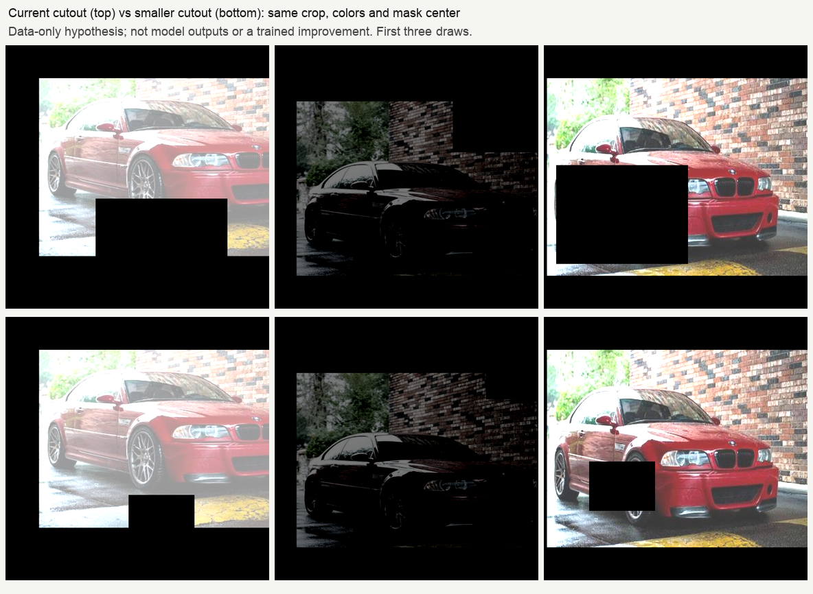
| Cutout dimension ratio | Content canvas masked | Original photo retained, estimated |
|---|---|---|
| 0.5 · original | 18.91% | 58.33% |
| 0.25 · smaller-mask control | 5.43% | 68.81% |
Coverage includes the background. Retained photo area is estimated from crop overlap and the resized mask; it is not a measurement of car-part visibility or semantic information. Edge clipping explains why the mean masked area is below the nominal 25% or 6.25%.
A subsequent matched continuation tested that smaller cutout for sixteen further updates from the same saved step-30 state. The step-46 comparison showed no convincing visual advantage across four fixed and twelve development inputs. That short, single-seed result leaves the broader augmentation question open. It does distinguish a measurable change in input coverage from evidence of better generation.
How the later GenDA-inspired augmentation differs
The later car baseline uses NVIDIA’s StyleGAN2-ADA augmentation implementation, with a documented selection of pixel, geometric, and color transforms, excluding cutout, filtering, and additive noise. It augments the rectangular car content before restoring the borders and schedules strength linearly from 0 to 0.6 over 200,000 real-image presentations. This is a separate, explicitly chosen implementation for those controls. It is not the original notebook recipe or a claim about GenDA’s unavailable training code, and the linear schedule is not an adaptive feedback controller.
For this project, augmentation is an explicit hypothesis about what can vary while useful evidence remains. The padded geometry, differentiable real/fake paths, and whole-image reference branch make that hypothesis concrete enough to inspect and test.
04 / Recovering the experiment
What did the old model actually learn?
Revisiting an old notebook first required establishing what could be recovered. Two historical generators, labeled run 1 and run 2.21, loaded into the restored 512-pixel implementation. For both, all 137 non-mapping tensors matched the official pretrained car generator exactly. The learned changes were in the mapping network and the saved blend coefficients.
That is direct evidence for the design’s intended constraint: the recovered generator did not learn new synthesis filters. Compact mapping packages could reconstruct all 153 saved generator tensors exactly. But the archive lacked the separate original reference model, per-run source, and exact training-step metadata. Fresh inference therefore uses the official reference mapping and the notebook’s combined-mapping formula. It is a documented reconstruction, with incomplete historical provenance.
The restored training loop also completed a short GPU run and checkpoint continuation. Those checks establish that training and resumption work; eleven updates do not establish that the old training result has been reproduced. Keeping those claims separate is essential when an experiment spans old notebooks, newer libraries, and recovered weights.
05 / Inspect the outputs
Appearance transfers.
Identity remains difficult.
The recovered model visibly changes the distribution. Red paint, greenery, and brick textures become recurring themes, while viewpoints and vehicle shapes still vary. The samples also expose the limitation: SUVs, incorrect grilles, and inconsistent body geometry remain. Shared colors and backgrounds are easier to recognize than faithful BMW identity.
Pretrained source
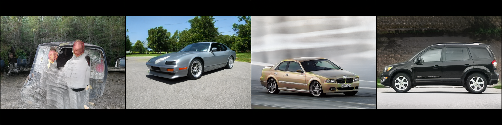
Historical run 2.21
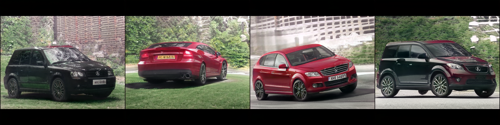
Recovered mapping and blend coefficients, with the official reference mapping. No new training.
06 / A controlled diagnostic
Low rank was enough
to store the answer.
LoRA adapts a model through low-rank weight updates. After the early GAN LoRA experiments struggled, I asked a narrower question: could a low-rank update represent the historical mapping changes at all?
To test that, I decomposed each historical mapping weight difference from the pretrained model using singular value decomposition, then kept only its leading components. This is a post-hoc compression experiment with zero training updates. The original learned blend coefficients were retained, and I separately tested whether to keep the historical biases.
Mean LPIPS · 12 development inputs · lower means closer to that checkpoint
Rank 32 with historical biases produced outputs almost indistinguishable from the original across the four fixed and twelve development samples. Resetting the biases to their pretrained values caused visible changes in lighting, geometry, wheels, and backgrounds. Increasing the rank to 128 did little to recover the missing bias contribution in this diagnostic.
This finding made “just increase the rank” a less persuasive next move. The low-rank representation could already approximate this checkpoint closely on the inspected inputs. The unresolved issue was how to learn a useful transformation from the single image. Bias training became a concrete ablation, although its later tested variants did not establish a quality improvement.
The distinction matters: compressing a known solution does not demonstrate that gradient descent can discover it. It also preserves the solution’s existing defects. These results support a limited capacity claim on this checkpoint and these inputs, not a general guarantee about low-rank adaptation.
07 / A useful failure
The score improved.
The images got worse.
A bounded overnight experiment tested mapping-only and mapping-plus-synthesis LoRA, alongside a diagnostic full-mapping control. Across the batch, 18,630 updates took about 7 hours 51 minutes on one Tesla T4. The controller selected a rank-8 mapping-plus-synthesis checkpoint at step 6,000 using numerical screening.
On twelve validation inputs, that model moved closer to the target photograph according to LPIPS. Looking at the full images told a different story.
| Model | Target LPIPS | Pairwise LPIPS |
|---|---|---|
| Historical 2.21 | 0.60160 | 0.55656 |
| Mapping LoRA, rank 32 / 6,000 | 0.60823 | 0.50117 |
| Mapping + synthesis, rank 8 / 6,000 | 0.57008 | 0.47252 |
Target LPIPS measures distance to one training photograph. Pairwise LPIPS measures differences between generated samples. Neither is a standalone quality score, and increasing pairwise distance can also reward artifacts. Measurements use LPIPS-Alex 0.1.4 on content cropped to remove letterbox bars, resized to 192 × 256, and clamped to the display range.
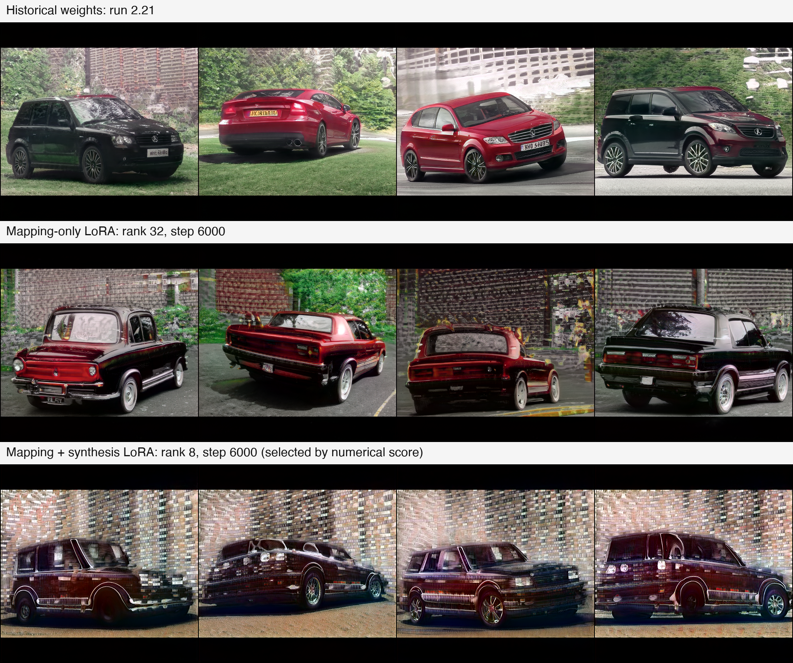
The selected model produced striping, embossed edges, malformed windows, and repeated brick backgrounds. The rank-32 mapping-only model avoided some of the striping but drifted toward distorted vintage-car shapes. Neither demonstrated an improvement over historical run 2.21.
A separate audit on 24 inputs fresh to that selection reinforced the finding: the selected model’s target LPIPS was 0.56726, yet its image defects persisted. Its raw output maximum also reached 2.6033, exceeding the experiment’s 2.5 range guard. Those inputs became development evidence once inspected; they cannot serve as an untouched test set for later decisions.
The practical lesson is to inspect the whole bank alongside the metric. A scalar distance can capture a movement toward familiar textures while missing a deterioration in the object that matters. This was one target and one training seed, with incomplete historical training metadata—not an equal-budget benchmark establishing that LoRA is generally worse than full fine-tuning.
08 / Where the investigation went
Make the next question smaller.
The broader project also explored SDXL reference conditioning and LoRA. Development samples showed closer BMW-like geometry, with unresolved diversity and fine-detail tradeoffs. Those experiments use a different pretrained system, and their prompts explicitly name the BMW E46. They are useful context, but they do not establish an improvement to the original StyleGAN2 method.
The subsequent GAN investigation turned to GenDA, which studies adaptation through lightweight generator and discriminator components. My implementations explored a shared scale-and-bias transformation in style space, a frozen discriminator feature backbone with a trainable output classifier, and different scopes for the final RGB layer.
Recent controls asked whether classifier initialization could explain a failure to transfer sunglasses. At 5,000 updates, the random-initialized and source-initialized classifier variants both produced zero convincing dark-sunglasses transfers among the sixteen inspected inputs at each of two truncation settings. They changed the character of the artifacts—yellow-green and expression drift versus severe magenta darkening—without fixing the task.
These are preliminary, subjective development observations. The runs covered 20,000 real-image presentations, one tenth of the referenced 200,000-presentation horizon. They used one photographic reference derived from a published figure, one training seed, and disclosed implementation assumptions. The source-initialized classifier is a deliberate departure from the documented random initialization. These controls do not constitute an exact GenDA reproduction or a contradiction of its published results.
The next planned control completes a comparison between classifier initialization and whether the final RGB layer trains. That experiment is pending as of this post. Its purpose is to isolate one interaction before changing the architecture again.
What I take forward
Preserve the source knowledge.
Separate capacity from optimization.
Judge the distribution you actually generate.
The original idea remains compelling: reuse a strong generative prior and ask a small, carefully chosen part of the system to adapt. The evidence so far shows both its promise and its limits. The recovered model transfers aspects of a photograph while retaining variation; it does not reliably preserve the target vehicle’s identity. The most useful progress has come from making those limits measurable enough to design the next experiment.
09 / Evidence & context
A record you can inspect
This is a research retrospective and development report, not a peer-reviewed paper or a state-of-the-art claim. All displayed samples are existing experiment artifacts. No figure uses newly generated illustrative images, retouching, or color correction. The interactive viewer includes every image in each selected bank.
- Measurements and provenance — extracted numbers, experimental caveats, source-file hashes, augmentation parameters and audits, and published asset hashes.
- Compression comparison at full resolution — historical outputs, rank-32 compression, and the bias-reset control.
- The complete 24-input LoRA audit — fresh to the original checkpoint selection, now development evidence.
The release contains the article, saved figures, and selected evidence. Training checkpoints, original notebook archives, account credentials, and private run logs are not part of this blog release. The later photographic GenDA figure crops are not redistributed here.
Research that informed this work
- Karras et al. — Analyzing and Improving the Image Quality of StyleGAN. CVPR 2020. The pretrained generative backbone. Official implementation; Rosinality’s PyTorch implementation underlies the restoration.
- Hu et al. — LoRA: Low-Rank Adaptation of Large Language Models. The low-rank adaptation framework explored in the later GAN experiments.
- Zhang et al. — The Unreasonable Effectiveness of Deep Features as a Perceptual Metric. CVPR 2018. The source of LPIPS, used here as a diagnostic.
- Yang et al. — One-Shot Generative Domain Adaptation. The GenDA project and paper, motivating the later lightweight-adapter controls.
- Zhao et al. — Differentiable Augmentation for Data-Efficient GAN Training. The source of the differentiable color and cutout transforms used in my original pipeline and restoration.
Presentation and artifact notes
The page follows the figure-led research communication of InstructPix2Pix, the StyleGAN2 release, and Google’s Transformer research post. The writing, layout, and method diagram are prepared for this project. The augmentation section was added on October 16, 2026, using the original notebook and saved October 4 audits; the other research sections retain the October 14 snapshot. No affiliation with those authors is implied.
The reference photograph comes from the original project asset. Its separate authorship and license are not established in the recovered records; this release grants no new license to that photograph or third-party model materials. Sample grids are byte-for-byte copies of saved artifacts. Figure captions distinguish reconstructed historical inference, post-hoc compression, and newly trained adapters. Historical execution metadata is incomplete, and comparisons are not a claim of bitwise historical reproduction.